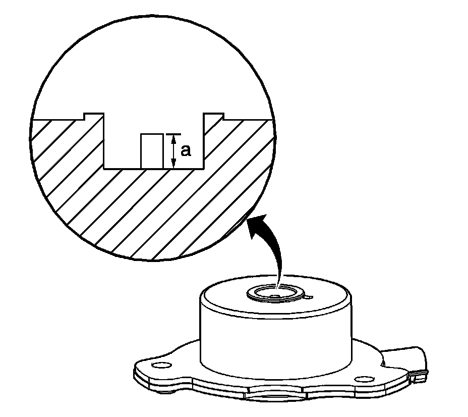

45. Camshaft Position Actuator Magnet Cleaning and Inspection
Camshaft Position Actuator Magnet Cleaning and Inspection

Important: Do not energize the camshaft position (CMP) magnet using a 12-volt power supply.
1. Inspect the CMP magnet for the following conditions:
^ A damaged electrical connector
^ An accumulation of dirt or debris in the recessed area around the pintle
^ A build-up of burnt engine oil on the shaft of the pintle which may cause the pintle to stick and not move freely within the proper range of travel
2. Holding the CMP magnet with the pintle facing upward, measure the pintle retracted position (a). Record the dimension.
3. Holding the CMP magnet with the pintle facing downward, measure the pintle extended position (a). Record the dimension.
4. Subtract the retracted dimension from the extended dimension to determine pintle travel. A properly moving pintle will travel 3.0-5.5 mm (0.12-0.22 in).
5. If the pintle of the CMP magnet is binding or does not move within the proper range of travel, replace the CMP magnet as an assembly.